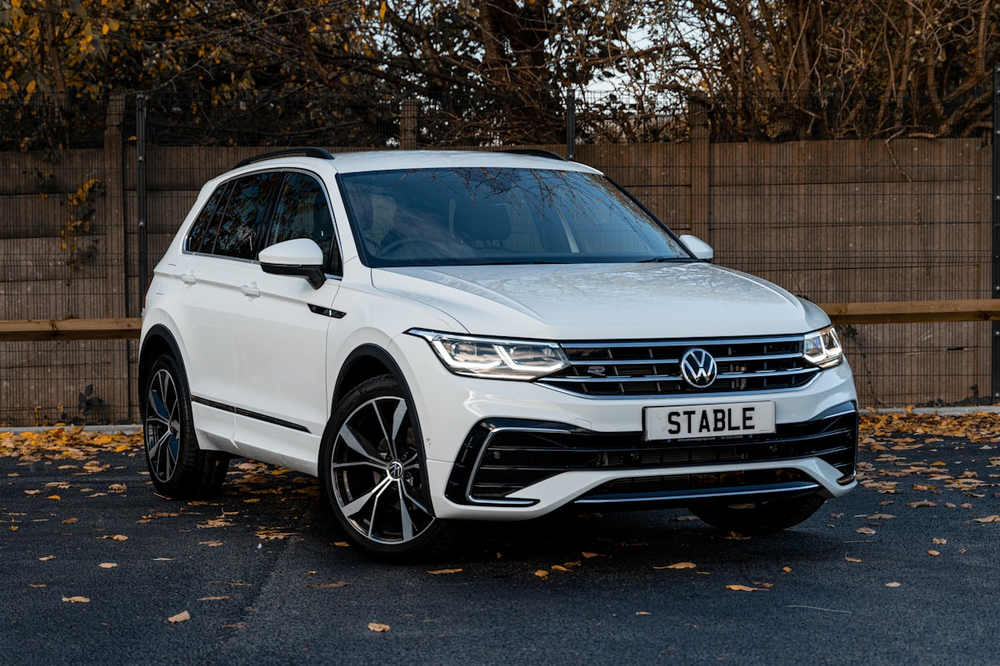

Ключі Volkswagen в Ужгороді — виготовлення, дублікат, програмування

Виготовляємо ключі Volkswagen усіх поколінь — від класичних механічних ключів для Passat B5 до сучасних smart-ключів MQB для Tiguan, Touareg, Arteon. Маємо обладнання для роботи з імобілайзерами IMMO 3, IMMO 4 та IMMO 5 (MQB), ключовими профілями HU66 та HU162T, чіпами ID48 та Megamos AES.
Потрібен ключ Volkswagen?
Зателефонуйте — скажемо точну ціну та чи є потрібна заготовка
З якими моделями Volkswagen ми працюємо
- Volkswagen Passat (B5, B6, B7, B8)
- Volkswagen Golf IV / V / VI / VII / VIII
- Volkswagen Polo
- Volkswagen Tiguan I / II
- Volkswagen Touareg
- Volkswagen Touran
- Volkswagen Jetta
- Volkswagen Caddy
- Volkswagen T4 / T5 / T6 / Crafter
- Volkswagen Amarok
- Volkswagen Sharan
Ціни на ключі Volkswagen в Ужгороді
| Послуга | Ціна | Час |
|---|---|---|
| Дублікат ключа за оригіналом | від 1500 грн | 30–60 хв |
| Виготовлення викидного ключа з лезом HU66 | від 2000 грн | 60 хв |
| Чіп-ключ (ID48 / Megamos AES) | від 2500 грн | 60–90 хв |
| Smart-ключ MQB (Tiguan, Passat B8) | від 4500 грн | 1–2 год |
| Програмування при повній втраті ключів | від 3500 грн | 1–3 год |
| Ремонт корпусу викидного ключа | від 500 грн | 20 хв |
| Заміна батарейки + перепрограмування | від 250 грн | 10 хв |
* Точна вартість залежить від моделі, року випуску та комплектації. Уточнюйте по телефону.
Чому Seven Keys для Volkswagen?
- Працюємо з усіма поколіннями VW від 1995 року до 2025
- Підтримка платформ PQ35, MQB, MLB
- Прив'язка через OBD-II та програматори VVDI / Autel / Xhorse
- Чіпи ID48, Megamos AES, MQB48 — у наявності
- Викидні корпуси HU66 та HU162T — є на складі
- Можемо виготовити ключ при повній втраті всіх ключів
Як замовити ключ Volkswagen
- Зателефонуйте і назвіть модель, рік випуску та VIN (бажано)
- Ми перевіримо наявність заготовки і назвемо точну ціну
- Приїжджайте до майстерні (вул. Фединця 39, Ужгород) або викликайте майстра з обладнанням
- Виготовляємо і програмуємо ключ при вас — у середньому за 1–2 години
- Перевіряємо роботу: запуск, центральний замок, кнопки
Часті запитання про ключі Volkswagen
Чи можете зробити ключ Volkswagen без оригіналу?
Так. При повній втраті ключів ми зчитуємо дані з імобілайзера через OBD-роз'єм або через зняття блоку. Для VW з MQB-платформою (Passat B8, Tiguan II, Arteon) потрібно більше часу — від 1 до 3 годин.
Скільки коштує чіп-ключ для Volkswagen Passat B7?
Дублікат викидного ключа з чіпом ID48 для Passat B7 — від 2500 грн з програмуванням. Якщо немає оригіналу — від 3500 грн.
Чи робите ключ для Volkswagen Tiguan 2018+ року?
Так. Tiguan II має smart-ключ MQB. Виготовлення дубліката — від 4500 грн. При повній втраті — від 6000 грн (через складність прив'язки до іммобілайзера 5 покоління).
Чи можна перепрограмувати ключ після заміни батарейки?
У більшості моделей VW після заміни батарейки потрібна синхронізація — це робимо на місці за 5–10 хвилин.
Чи буде працювати оригінальний ключ після виготовлення дубліката?
Так. При додаванні нового ключа всі попередні залишаються робочими.
Не знайшли свою модель?
Працюємо з усіма Volkswagen — зателефонуйте, підкажемо рішення